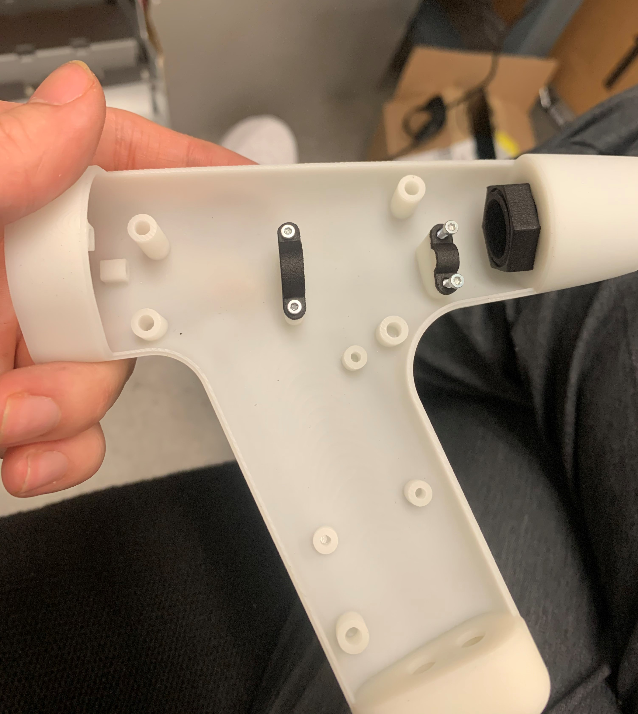

The customer is developing a hand piece that uses electricity.
Liquid cooling needs to be integrated into the hand piece to cool the electronic components

Prototype of revised CAD handpiece
Summary
Objectives:
The hand piece needs:
To retain liquid inside to protect users from hazards occurring from water and electricity
The CAD model refined and created with anticipation of injection molding being the final method of manufacture
Challenges:
I had a limited knowledge of o-rings and injection molding and had to self teach via company resources
The inherited CAD model had many interlinked features that I spent time un-linking to allow for modification by future co-ops
Results:
2 interlocking pieces were made to be sealed with custom gaskets, threaded inserts, and tapered holes.
A custom threaded nut was created to allow for water cooling loops to feed from behind
A peer-checked simulation proving chosen insulation will result in no condensation on the interior of the handpiece
An organized CAD model that is mostly injection molding friendly